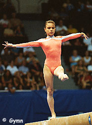

Evgenia Kuznetsova (RUS/BUL)
1998 European B Champion
 |
|
Medal Total World
Championships: 2 Silver
|
Evgenia was born in St. Petersburg on December 18, 1980. A solid and dependable gymnast, particularly on beam, she was left off the 2000 Russian Olympic team in favor of a younger gymnast. Still wanting to compete, she moved to Bulgaria and became a citizen in 2000.
Competition Results
1994
RUS Championships: 1st AA (junior division), 2nd UB, 6th
V, 8th B
RUS Cup: 6th AA
World Stars: 5th AA, 1st FX, 3rd B, 4th V, 4th UB
1995
Catania Cup: 2nd AA, 2nd FX
European Youth Olympic Days: 1st AA, 1st V, 1st UB, 6th B, 6th FX
International Championships of Romania: 11th AA, 4th FX, 5th UB
International Jr. Championships: 1st AA, 1st V, 3rd UB, 4th FX, 6th B
Jr. European Team Semi-finals: 1st AA
Messe Cup: 5th AA
RUS Championships: 10th AA, 3rd FX, 5th V, 5th UB
RUS Cup: 5th AA
1996
Catania Cup: 4th AA
ITA-BLR-ROM-RUS Meet: 7th AA
RUS Championships: 8th AA, 1st UB, 6th V, 6th FX, 8th B
RUS Cup: 4th AA
1997
Gander Memorial: 2nd AA
RUS Championships: 10th AA, 2nd UB, 8th FX
RUS Cup: 3rd AA, 3rd FX, 6th B
Trophee Massilia: 3rd UB, 3rd FX, 4th B
World Championships: 2nd Team, 16th AA, 8th
UB
1998
Chunichi Cup: 2nd AA, 2nd B, 3rd UB, 5th V, 6th FX
Copa Gimnastica: 11th AA, 5th UB
European Championships: 2nd Team, 1st B,
7th UB
French International: 2nd B
Goodwill Games: 5th B
Pusan International: 6th AA
RUS Championships: 4th AA, 3rd UB, 3rd FX, 5th V
RUS Cup: 6th AA, 3rd UB, 6th B, 7th V, 7th FX
1999
French International: 6th AA, 2nd B
RUS Championships: 9th AA, 3rd UB, 6th B
RUS Cup: 6th AA, 2nd UB, 5th B
Siska International: 1st AA
Trophee Massilia: 4th AA
World Championships: 2nd Team
2000
European Championships: 1st Team
HUN International: 4th UB, 5th B
RUS Championships: 2nd Team, 4th AA, 8th UB
RUS Cup: 7th AA, 3rd UB, 4th FX, 5th V, 8th B
World Stars: 4th AA, 3rd V, 4th FX
2001
Gander Memorial: 4th AA
ROM-BUL-FRA Tri-Meet: 7th AA
Swiss Cup: 2nd AA
Voronin Cup: 2nd AA
World Championships: 14th Team, 15th AA
2002
BUL Championships: 1st AA
European Championships: 7th Team, 8th AA
Gander Memorial: 4th AA
Intl. Championships of Romania: 3rd AA
Siska International: 4th AA
Swiss Cup: 2nd AA
World Championships: 8th B (semis)
2003
World Championships: 19th Team, 34th AA (prelims)
2004
Olympic Games: 93rd AA (prelims)
This page was created on January 27, 2000 and was
last updated on January 03, 2007.
© Gymn Forum